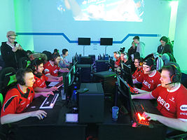

Киберспорт
Новости
Чемпионаты
Составы команд
Про нас
Контакты
Что такое киберспорт?
Киберспорт, также именуемый как компьютерный спорт или электронный спорт — командное или индивидуальное соревнование на основе видеоигр.
Особенности
Все киберспортивные дисциплины делятся на несколько основных классов, различаемых свойствами пространств, моделей, игровой задачей и развиваемыми игровыми навыками киберспортсменов: шутеры от первого лица, стратегии реального времени, авто- и авиа-симуляторы, командные ролевые игры с элементами тактико-стратегической игры и т. д.
